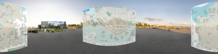
Архангельск /
КАРТА-СХЕМА ВИРТУАЛЬНОГО ПУТЕШЕСТВИЯ ---------------------> «В Архангельск(уЮ) вокруг марш!»
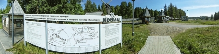
Малые Корелы /
** 2023-07-16 КАРТА - СХЕМА , КАССЫ музея Малые Корелы. Начало ВИРТУАЛЬНОГО ТУРА по музею-заповеднику деревянного зодчества под открытым небом.
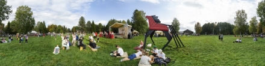
Малые Корелы /
**** 2024-09-08 ОБЗОРНАЯ ПАНОРАМА Двинского, Мезенского и Пинежского секторов музея МАЛЫЕ КОРЕЛЫ. Этнокультурный фестиваль. «БОРОДА 2024». Выступление СЕВЕРНОГО РУССКОГО НАРОДНОГО ХОРА..
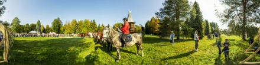
Малые Корелы /
*** 2024-09-08 «БОРОДА 2024». Этнокультурный фестиваль. Представление конных клубов. Музей Малые Корелы.
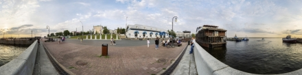
Архангельск /
****, 2024-09-01 Северный морской музей. Красная пристань, Северная Двина, Набережная, , Архангельск
 Архангельск /
**** 2024-07-19 ПАМЯТНИК В.И. Ленину. Площадь Ленина. ул. Воскресенская, пр. Троицкий. Высотка. Центр Архангельска.
Архангельск /
**** 2024-07-19 ПАМЯТНИК В.И. Ленину. Площадь Ленина. ул. Воскресенская, пр. Троицкий. Высотка. Центр Архангельска.

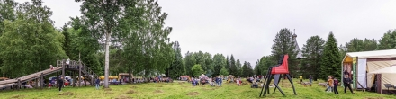
Малые Корелы /
!!! ***** !!! 2024-07-14 ОБЗОРНАЯ ПАНОРАМА Двинского, Мезенского и Пинежского секторов музея Малые Корелы. Этно-джазовый фестиваль «СЕНОФЕСТ 2024». ДвухГигапиксельная панорама сверхвысокой детальности!!
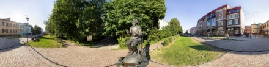
Архангельск /
**** 2024-07-27а Памятник Борису Шергину (северному писателю и фолклористу). пр-кт Чумбарова-Лучинского
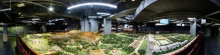
Санкт-Петербург /
**** 2015-09-16 Музей-макет "Петровская Акватория» - исторический макет Петербурга 18 века
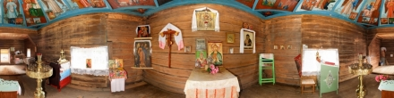
Усть-Поча /
**** 2012-09-22 д. Усть-Поча, ЧАСОВНЯ НИКОЛАЯ ЧУДОТВОРЦА, Д. УСТЬ-ПОЧА, НЕБО. Кенозерский Национальный парк, Кенозеро, КНП, Чурбанов, 2011, ПС
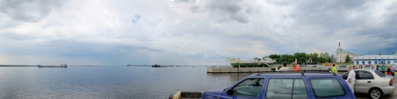
Архангельск /
**** 2012-07-29а День ВМФ. Выступление пилотажной группы "Стрижи"/ Панорама высокой детальеости . Хорошо видны самолеты и следы от них.
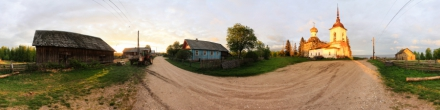
Морщихинская /
**** 2012-06-03 д. Морщищинская, Церковь Петра и Павла в Лекшмозере. Кенозерский национальный парк.
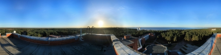
Сестрорецк /
**** 2012-04-21 г. Санкт-Петербург (Сестрорецк). Вид с крыши Санатория "Белые ночи" на Финский залив., ,
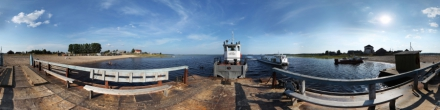
Вершинино /
**** 2011-07-20 д. Вершинино. Вид с причала на Кенозеро и визит-центр. Начало виртуального путешествия по Плесецкому сектору Кенозерского Национального парка.